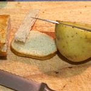
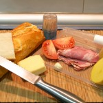
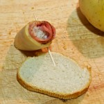
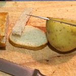
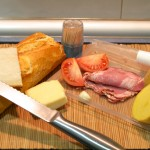
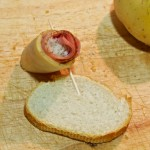

¿Habéis ido a un bar a pedir un café solo? Si no dais ninguna otra indicación, ¿qué os han traído? Yo personalmente, tengo que recitar un poema para poder conseguir tomar un café más o menos en condiciones. Para preparar un buen café hay que tener en cuenta algunas consideraciones. Aunque parezca tan sencillo como [ Read More ]
 ¿Habéis ido a un bar a pedir un café solo? Si no dais ninguna otra indicación, ¿qué os han traído? Yo personalmente, tengo que recitar un poema para poder conseguir tomar un café más o menos en condiciones.
¿Habéis ido a un bar a pedir un café solo? Si no dais ninguna otra indicación, ¿qué os han traído? Yo personalmente, tengo que recitar un poema para poder conseguir tomar un café más o menos en condiciones.
Para preparar un buen café hay que tener en cuenta algunas consideraciones. Aunque parezca tan sencillo como cargar el casquillo, ponerlo en la máquina y darle al botón hasta que se pare, en realidad es mucho más complejo y tiene tras su elaboración un proceso que puede variar considerablemente el resultado final.
Los amantes del café (entre los que me incluyo) seguro que coinciden en que es realmente complicado encontrar un lugar donde poder tomar un café, café. Vale, cada uno lo toma a su manera: algunos con leche, otros café largo (americano), otros lo prefieren de filtro…Sobre eso no hay nada que decir, pero sí sobre el café “clásico”, café tal cual, conocido también como “Espresso”. ¿Realmente es tan difícil tomarse un buen café? Sí y no. Vamos a charlar un poco sobre el tema, con un buen café sobre la mesa.
Pedir un café en “un bar cualquiera”
Aunque cueste creerlo, aquí en España es realmente difícil pedir un café Expresso en un “bar cualquiera” (sin ánimo de hacer ningún desprecio) y que esté realmente bueno, de eso que disfrutas de tomarte ese café. Como he comentado al principio, cada uno toma el café como más le gusta, pero creo que debería haber ciertos “estándares”, un cierto conocimiento hacia este producto por parte de los llamados “profesionales del sector”, que en la mayoría de las ocasiones son los encargados elaborarlo.
 Por supuesto que hay buenos bares donde te sirven un buen café, pero en comparación, son una minoría. La mayor parte de los bares/cafeterías te sirven algo parecido a agua sucia, amarga, con sabor a quemado, y por lo que te cobran, según en que locales de centros de ciudad, hasta 2€. En cambio podemos irnos a un bar de las afueras, o incluso de un pequeño pueblo, donde un café nos cueste 1€ o poco más y ser realmente bueno; serías capaz de recorrer la distancia que separa tu casa de ese bar solo para tomar un café. Entonces, ¿por qué si se pueden encontrar ciertos locales donde tomar un buen café, hay tan pocos? El principal motivo, o mejor dicho, los principales motivos son, según mi experiencia, el desconocimiento sobre como se prepara un café, el hecho de que quien lo prepara no le gusta el café lo suficiente y, obviamente, el dinero.
Por supuesto que hay buenos bares donde te sirven un buen café, pero en comparación, son una minoría. La mayor parte de los bares/cafeterías te sirven algo parecido a agua sucia, amarga, con sabor a quemado, y por lo que te cobran, según en que locales de centros de ciudad, hasta 2€. En cambio podemos irnos a un bar de las afueras, o incluso de un pequeño pueblo, donde un café nos cueste 1€ o poco más y ser realmente bueno; serías capaz de recorrer la distancia que separa tu casa de ese bar solo para tomar un café. Entonces, ¿por qué si se pueden encontrar ciertos locales donde tomar un buen café, hay tan pocos? El principal motivo, o mejor dicho, los principales motivos son, según mi experiencia, el desconocimiento sobre como se prepara un café, el hecho de que quien lo prepara no le gusta el café lo suficiente y, obviamente, el dinero.
Como he dicho soy un amante del café, me encanta tomar un buen café y no me importa pagar por él; el hecho de llevar una cafetería ha influido en mi percepción sobre este magnífico producto y, como fanático que soy, debo ofrecer a los clientes el mejor café de la zona (autobombo =D). Vamos a ver un poco cuales son los secretos, factores y sobretodo cuidados que influyen para la calidad final de un café:
Calidad del café, la materia prima
 Primero, y obviamente parte fundamental, es la calidad del café. Ésta, al igual que todos los productos, varia mucho de un café a otro. Al igual que el vino, también hay diferentes variedades de grano de café, lo que provoca que exista una gran variedad de mezclas. Tenemos cafés 100% arábica, cafés torrefactados, mezclas…
Primero, y obviamente parte fundamental, es la calidad del café. Ésta, al igual que todos los productos, varia mucho de un café a otro. Al igual que el vino, también hay diferentes variedades de grano de café, lo que provoca que exista una gran variedad de mezclas. Tenemos cafés 100% arábica, cafés torrefactados, mezclas…
Aquí entra la mano del productor de café (como el vino), quien hace sus mezclas y tiene su propio proceso de fabricación, donde el tueste es también una parte muy importante, ya que según se va tostanto en café, va variando sus propiedades, su sabor y sus aromas.
Según el grado de tueste, obtenemos unos granos de color marrón claro, color miel, o más oscuros y poco a poco van apareciendo los aceites propios del café que quedan adheridos a su superficie. Esos aceites le dan a los granos de café un aspecto brillante, pero hay otra “modalidad” de tueste de café, el café “torrefactado“. Este proceso se hace añadiendo una cierta cantidad de azúcar que a efectos visuales parece que el café tiene ese aceite, pero en realidad es el azúcar caramelizado. Lo que se consigue con esto es un café de peor calidad, pero que obviamente es más asequible. Y casualmente es de los cafés más usados por esta zona.
 Pero no menos importante es el envase donde conservar el café una vez tostado. El mejor lugar para conservarlo es en una bolsa metalizada que lo proteja de la luz, del aire y de la humedad, envasado al vacío con atmósfera protectora y una válvula unidireccional que permita el control de los aromas pero que no deje entrar aire a la bolsa. Vamos, que un tarro de cristal o plástico no es lo suyo para conservarlo durante un largo período de tiempo.
Pero no menos importante es el envase donde conservar el café una vez tostado. El mejor lugar para conservarlo es en una bolsa metalizada que lo proteja de la luz, del aire y de la humedad, envasado al vacío con atmósfera protectora y una válvula unidireccional que permita el control de los aromas pero que no deje entrar aire a la bolsa. Vamos, que un tarro de cristal o plástico no es lo suyo para conservarlo durante un largo período de tiempo.
Todos estos factores (entre otros), hacen que la calidad de la materia prima sea mejor o peor, y obviamente el precio varia. Por tanto, el primer factor que determina la calidad final es este, donde desgraciadamente la mayoría de bares escatiman y buscan siempre el café más barato.
Y hablando de materia prima, la otra parte necesaria e imprescindible para hacer el café es el agua, y es también MUY importante que sea de calidad. No saldrá igual un café hecho con agua embotellada, agua de “osmosis” o agua del grifo. Esta última opción muy usada.
El molinillo, la molienda y en gramaje
 Ese cacharro que hace tanto ruido cuando vamos al bar también es realmente importante. Si queremos obtener un buen café, debemos tener un buen molinillo, y se le debe llevar un control y mantenimiento casi diario. Para empezar, es el encargado de moler el café para su uso, y aquí tenemos otro factor crítico: el grado de molido del café. No es lo mismo un molido grueso que fino. Mientras que el grueso deja un paso mayor de agua, uno fino hace todo lo contrario, por tanto, debemos encontrar el grado adecuado para cada café y, sobretodo para cada día. No es lo mismo un día de verano que uno de invierno; la humedad es distinta y por tanto se debe modificar el grado de molido según si hay más o menos humedad, y este proceso debería hacerse a diario.
Ese cacharro que hace tanto ruido cuando vamos al bar también es realmente importante. Si queremos obtener un buen café, debemos tener un buen molinillo, y se le debe llevar un control y mantenimiento casi diario. Para empezar, es el encargado de moler el café para su uso, y aquí tenemos otro factor crítico: el grado de molido del café. No es lo mismo un molido grueso que fino. Mientras que el grueso deja un paso mayor de agua, uno fino hace todo lo contrario, por tanto, debemos encontrar el grado adecuado para cada café y, sobretodo para cada día. No es lo mismo un día de verano que uno de invierno; la humedad es distinta y por tanto se debe modificar el grado de molido según si hay más o menos humedad, y este proceso debería hacerse a diario.
Los gramos de café también son muy importantes, y dependen de la calidad inicial de éste. Generalmente, se usan entre 6-7 gramos por taza de café, aunque si es de muy buena calidad, podemos incluso usar menos cantidad, y para pesarlo se usa una balanza de precisión, que sirven para más cosas que las que muchos creen. Otro punto importante es el hecho de tener bien claro que debemos dejar el mínimo de café molido si se acaba el día, y en caso de no poder terminar del todo el dosificador, sería una buena opción poner lo que nos ha quedado molido en un tupper cerrado herméticamente y guardarlo en la nevera.

A todo esto hay que sumar que de vez en cuando se deben limpiar las cuchillas del molinillo, ya que con el tiempo van quedando restos de café y aceite que dificultan que pueda hacer bien su trabajo, y éstas (al igual que el molinillo completo) deben ser de la mayor calidad posible; con esto ganamos en que no se calientan tanto como unas más normalillas, por lo que al moler el café, éste no se “quema”, por llamarlo de alguna forma, y el dosificador al ser de mayor calidad, siempre nos dispensará la misma cantidad de café y necesitará un menor control. En cambio, uno de mala calidad, puede que en ocasiones no nos deje caer los mismos gramos de café, por lo que no obtendríamos un café como debería. Por descontado, se deben limpiar periódicamente tanto la tolva como el dosificador, al igual que pasa con las cuchillas (fresas).
La cafetera
 Podemos decir que es casi el alma de un buen café, aunque como hemos visto hasta ahora, todo influye. La cafetera está formada por varias piezas o “secciones” que deben tenerse en cuenta.
Podemos decir que es casi el alma de un buen café, aunque como hemos visto hasta ahora, todo influye. La cafetera está formada por varias piezas o “secciones” que deben tenerse en cuenta.
Para empezar, la temperatura a la que tenemos el agua debe rondar los 90ºC para poder extraer todas las cualidades del café. Si está por debajo de esa temperatura no lograremos extraer los aromas y propiedades; en cambio, si está por encima lo que haremos es “quemar” el café, perdiendo, entre otras cosas, su cremosidad y sabor. De la misma manera debe controlarse la presión del agua, que está en torno a 9 atmósferas.
 Otra zona importante es la parte superior de la cafetera. Sobre ella debemos tener las tazas para que estén calientes y al poner el café éste no se enfríe al entrar en contacto con ella, lo que puede provocar, por ejemplo, una pérdida de crema.
Otra zona importante es la parte superior de la cafetera. Sobre ella debemos tener las tazas para que estén calientes y al poner el café éste no se enfríe al entrar en contacto con ella, lo que puede provocar, por ejemplo, una pérdida de crema.
Los brazos también tienen mucho que decir en todo esto. Es importante que estén siempre puestos en la máquina para que se mantengan calientes, los casquillos deben ser limpiados a diario (incluso un par de veces al día), y al poner la dosis de café, ésta debe ser repartida con pequeños golpes para conseguir luego un prensado uniforme, ni demasiado prensado ni demasiado poco. Y aunque parezca obvio, NUNCA de debe sacar más de un café por carga.
Para la limpieza “interior” de la cafetera, hay unos casquillos que se colocan en lugar de los filtros llamados “ciegos”, que no tienen agujeros y que seguro que muchos bares desconocen. Estos lo que hacen es que al colocarlos y pulsar el botón para hacer un café, el agua no cae y se limpian los conductos internos. Interesante, ¿verdad?
La taza
 Sí, aunque parezca que la taza tiene que importar poco, influye más de lo que la gente se imagina. Para empezar, esas tazas de hotel, redondas y bajas, con un “doble fondo” tan elegantes (ejem…) son de lo peor que te puedan traer.
Sí, aunque parezca que la taza tiene que importar poco, influye más de lo que la gente se imagina. Para empezar, esas tazas de hotel, redondas y bajas, con un “doble fondo” tan elegantes (ejem…) son de lo peor que te puedan traer.
Una buena taza de café debe ser más bien alta y estrecha, y muy importante, el fondo NO debe ser plano, sino ovalado; esto ayuda a obtener una crema mucho mejor ya que el café de “desliza” y no “impacta” directamente con el fondo. La razón de que sea más estrecha y alta que ancha y baja es por el hecho de que así se mantiene caliente, y evitamos una sobreextracción, o lo que es lo mismo, un café demasiado largo, que acaba perdiendo cualidades.
La temperatura ideal del café ronda los 80ºC, y para que disminuya lo mínimo el material de la taza también debe tenerse en cuenta, ya que debe mantener el calor de la mejor forma posible. ¿Recordáis que os he comentado que deben estar colocada sobre la cafetera?
La mano del camarero
 Pero si hay algo que no puede fallar, a parte de todo lo demás, es la mano de quien prepara el café. Para empezar, y como he dicho al principio, es imprescindible que quien prepara el café, le guste el café. Segundo, debe tener el ojo para ver que, si por algún motivo el café que acaba de sacar no cumple un mínimo de calidad, poder intuir a qué puede deberse, y rectificar lo necesario.
Pero si hay algo que no puede fallar, a parte de todo lo demás, es la mano de quien prepara el café. Para empezar, y como he dicho al principio, es imprescindible que quien prepara el café, le guste el café. Segundo, debe tener el ojo para ver que, si por algún motivo el café que acaba de sacar no cumple un mínimo de calidad, poder intuir a qué puede deberse, y rectificar lo necesario.
Obviamente ese café no debería ser llevado al cliente, pero pocas veces eso ocurre, y si por un extraño (o no tan extraño) motivo el café sale como el culo mal, aún así te lo traen para no tirarlo. Cosa que si me pasa a mi, lo tiran igual porque pido otro.
Y por supuesto debe saber el proceso de reparación del café, saber que debe prensarse antes (muchos bares ni siquiera lo prensan), no realizar “medias cargas” con el dosificador, ya que luego a la próxima solo nos dispensará la mitad de la carga, y todos los aspectos indicados anteriormente. Y muy importante, el café no puede esperar. Debe servirse al momento y que sea el cliente quien decida si tomarlo enseguida o no, pero nunca debe estar más de un par de minutos a ser servido.
Y hasta aquí el resumen de hoy. Creo que ahora ya sabéis un poco más sobre como tratar este producto y algunos de los factores que influyen en su elaboración, porque hay muchos más, pero estos creo que son los más importantes de cara al proceso final.
Así que ahora cuando vayáis a tomar un café, estad atentos a como os lo preparan, y seguro que si os fijáis, veréis que en pocos lugares se elabora “correctamente”. Y en menos lugares aún optan por un buen café y prefieren uno más barato y de peor calidad, que es por donde debería empezar a prepararse un buen “Expresso”.
Redactado por Toni Miquel (muchas gracias Toni)


 



![IMG_0581 [ensalada cheeseburger]](IMG_0581-ensalada-cheeseburger-150x150.jpg "IMG_0581 [ensalada cheeseburger]")
![IMG_0582 [ensalada cheeseburger]](IMG_0582-ensalada-cheeseburger-150x150.jpg "IMG_0582 [ensalada cheeseburger]")
![IMG_0584 [ensalada cheeseburger]](IMG_0584-ensalada-cheeseburger-150x150.jpg "IMG_0584 [ensalada cheeseburger]")
![IMG_0585 [ensalada cheeseburger]](IMG_0585-ensalada-cheeseburger-150x150.jpg "IMG_0585 [ensalada cheeseburger]")
![IMG_0587 [ensalada cheeseburger]](IMG_0587-ensalada-cheeseburger-150x150.jpg "IMG_0587 [ensalada cheeseburger]")
![IMG_0590 [ensalada cheeseburger]](IMG_0590-ensalada-cheeseburger-150x150.jpg "IMG_0590 [ensalada cheeseburger]")
![IMG_0591 [ensalada cheeseburger]](IMG_0591-ensalada-cheeseburger-150x150.jpg "IMG_0591 [ensalada cheeseburger]")
![IMG_0595 [ensalada cheeseburger]](IMG_0595-ensalada-cheeseburger1-150x150.jpg "IMG_0595 [ensalada cheeseburger]")
![IMG_0596 [ensalada cheeseburger]](IMG_0596-ensalada-cheeseburger1-150x150.jpg "IMG_0596 [ensalada cheeseburger]")


![DSCN4617[1]](DSCN46171-150x150.jpg "DSCN4617[1]")
![DSCN4619[1]](DSCN46191-150x150.jpg "DSCN4619[1]")
![DSCN4620[1]](DSCN46201-150x150.jpg "DSCN4620[1]")
![DSCN4621[1]](DSCN46211-150x150.jpg "DSCN4621[1]")
![DSCN4624[1]](DSCN46241-150x150.jpg "DSCN4624[1]")
![DSCN4626[1]](DSCN46261-150x150.jpg "DSCN4626[1]")
![DSCN4625[1]](DSCN46251-150x150.jpg "DSCN4625[1]")
![DSCN4627[1]](DSCN46271-150x150.jpg "DSCN4627[1]")
![DSCN4628[1]](DSCN46281-150x150.jpg "DSCN4628[1]")
![DSCN4646[1]](DSCN46461-150x150.jpg "DSCN4646[1]")


![DSCN4590[1]](DSCN45901-e1328046153806-150x150.jpg "DSCN4590[1]")
![DSCN4591[1]](DSCN45911-150x150.jpg "DSCN4591[1]")
![DSCN4593[1]](DSCN45931-150x150.jpg "DSCN4593[1]")
![DSCN4597[1]](DSCN45971-150x150.jpg "DSCN4597[1]")
![DSCN4599[1]](DSCN45991-150x150.jpg "DSCN4599[1]")
![DSCN4600[1]](DSCN46001-150x150.jpg "DSCN4600[1]")
![DSCN4607[1]](DSCN46071-150x150.jpg "DSCN4607[1]")